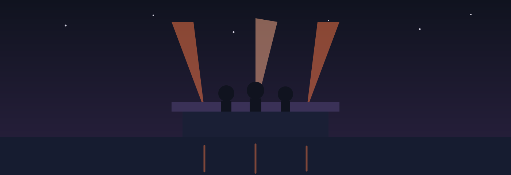

Vendredi 12
Ouverture
- 19 h — Fanfare du Canal
- 21 h — Lisa Marek
- 23 h — Collectif Bastide
12 · 13 · 14 juin 2026 — Toulouse
Trois soirs de musique au bord de l'eau, sur trois scènes flottantes.

Vendredi 12
Samedi 13
Dimanche 14
| Tarif | Gratuit, sans réservation |
|---|---|
| Horaires | De 17 h à minuit, les trois soirs |
| Restauration | Six producteurs locaux sur le quai |
| Accessibilité | Quai plat, deux scènes sur trois accessibles en fauteuil |
| Météo | Maintenu par temps de pluie, annulé en cas d'orage |